Stage00
METAMORPHOSIS
完全變態
臺灣的蝴蝶大約有 400 多種，生活史的長短會因種類及生長的氣候而不同。蝴蝶的一生分為卵、幼蟲、蛹、成蟲四個階段，四個階段的外觀、習性完全不同，稱為「完全變態」。
4個階段
METAMORPHOSIS
完全變態
LIFE CYCLE
BUTTERFLY SHADOWS, A FLEETING LIFE
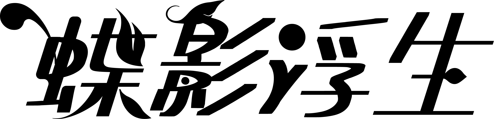
移動滑鼠，蝴蝶會跟著你
蝴蝶的一生從一粒卵開始。牠先以幼蟲的模樣啃食寄主植物，再於蛹中靜靜地重組自己，最後破蛹而出，換得一雙短暫而絢麗的翅膀。
「蝶影浮生」以臺灣常見的六種蝴蝶為主角：大白斑蝶、小紫斑蝶、淡紋青斑蝶、枯葉蝶、花鳳蝶與玉帶鳳蝶，整理牠們的樣貌、寄主植物與棲息的海拔。
瀏覽這個網站時，游標也會跟著蛻變：從幼蟲、蛹，到展翅的蝴蝶。
Idea leuconoe clara
蛺蝶科 · 斑蝶亞科
蝴蝶的分布非常廣，從海邊到高山、由沙漠至極地圈，都有不同的蝴蝶生存其中。成蟲會訪花吸蜜，幫助植物傳授花粉；也有許多種類不吸花蜜，而是吸食腐果或動物死屍、排遺，幫助自然界完成物質循環。
牠們的成蟲和幼蟲，也是鳥、蜥蜴、蜘蛛等動物的食物；而大部分幼蟲又取食植物，所以蝴蝶是食物網中不可少的一份子。
STRUCTURE — 蝴蝶構造
01 — HEAD
一對觸角，是嗅覺器官；一對複眼，每個複眼由六千至一萬個單眼構成；還有一個用來吸食花蜜、水的吻器。
幼蟲：頭部兩側有感應光線的單眼，口器能咬碎食物。02 — THORAX
擁有三對足和兩對翅，是成蟲活動的運動器官。斑蝶、蛺蝶等乍看只有四隻腳，其實是六隻，其中兩隻退化了。
幼蟲：三對胸足，末端有爪，用來攀附、取食。03 — ABDOMEN
負責消化、吸收食物的營養，末端具有生殖和排泄器官。身體兩側分布著氣孔，以氣管系統呼吸，幼蟲與成蟲都一樣。
幼蟲：四對腹足及一對尾足。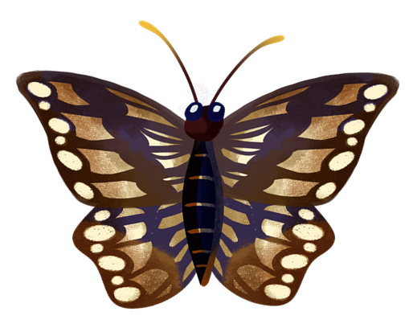
Stage00
METAMORPHOSIS
臺灣的蝴蝶大約有 400 多種，生活史的長短會因種類及生長的氣候而不同。蝴蝶的一生分為卵、幼蟲、蛹、成蟲四個階段，四個階段的外觀、習性完全不同，稱為「完全變態」。
METAMORPHOSIS
完全變態
LIFE CYCLE
Stage01
EGG
雌蝶通常將卵產在幼蟲會吃的葉子下面，以防止天敵及日曬雨淋。產卵的方式有群產與散產之分；卵的形狀也隨蝴蝶的種類而有不同的面貌。
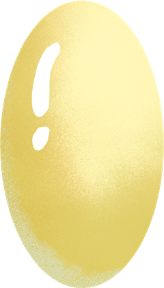
EGG
卵
STAGE 1 / 4
Stage02
LARVA
幼蟲的外殼無法跟著身體一起長大，所以成長過程中會藉由蠕動來「蛻皮」。幼蟲有三對胸足、四對腹足及一對尾足，顏色也因科別而千變萬化：鳳蝶科光滑無毛、多為綠色；斑蝶類有亮麗對比的條紋、斑點；蛺蝶科體表粗糙；粉蝶科長有細細的絨毛。
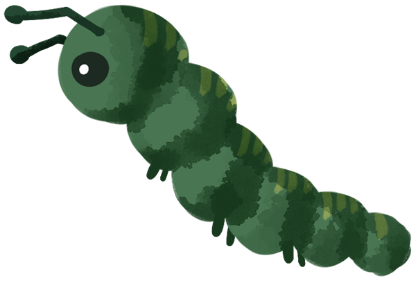
LARVA
幼蟲
STAGE 2 / 4
Stage03
PUPA
最後一次蛻皮前，幼蟲會吐絲把自己固定下來，這是最脆弱也最危險的時期。只有尾端固定、整個倒吊的是「吊蛹」，如蛺蝶、斑蝶；身上另有一條絲帶環繞支撐的是「帶蛹」，如鳳蝶、粉蝶。
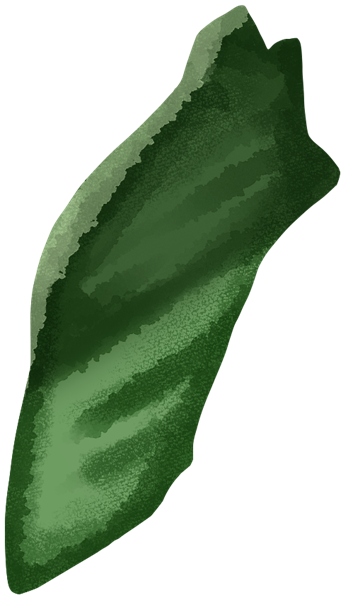
PUPA
蛹
STAGE 3 / 4
Stage04
ADULT
剛羽化的蝴蝶翅膀又濕又皺，要靠身體蠕動把體液送進翅脈，才能把翅膀推開，稱為「展翅」。翅膀腹面多是保護色，背面則色彩亮麗，主要用來求偶；吸食花蜜的同時，也替植物傳播花粉。
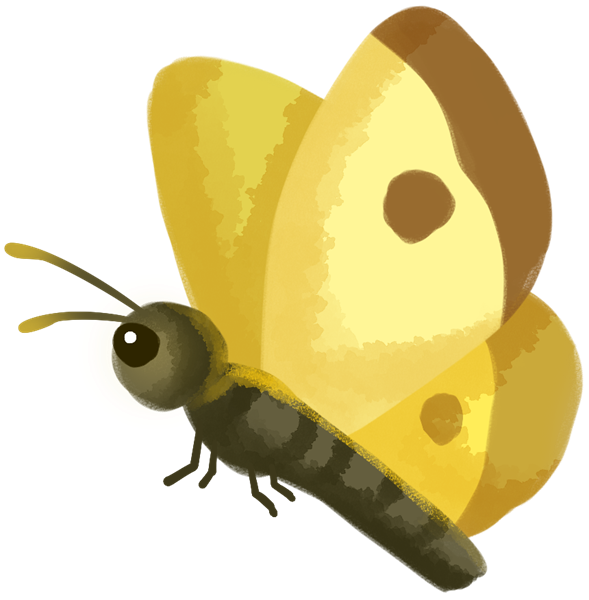
ADULT
成蟲
STAGE 4 / 4
LIFE
CYCLE
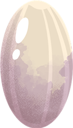
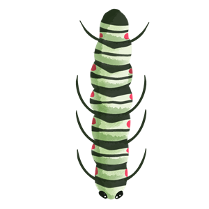

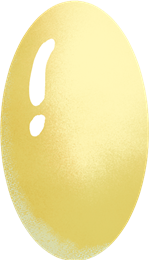
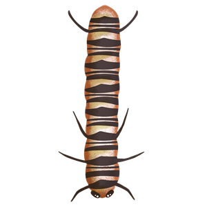

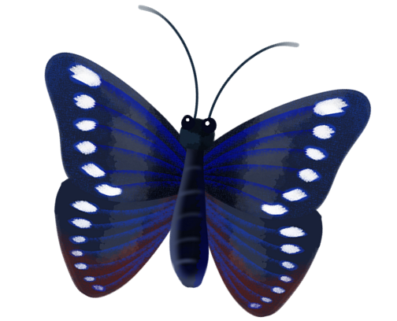
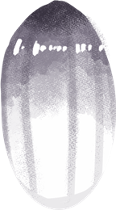
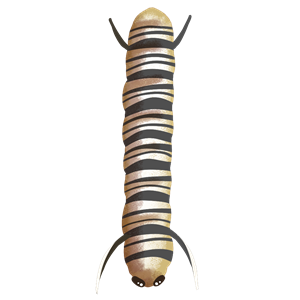

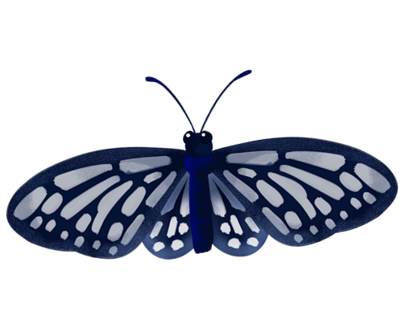
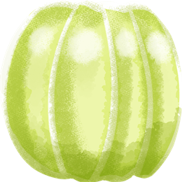
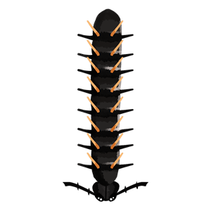

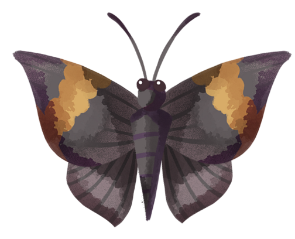
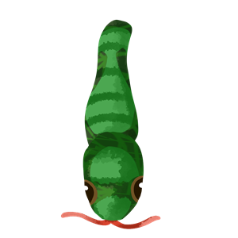

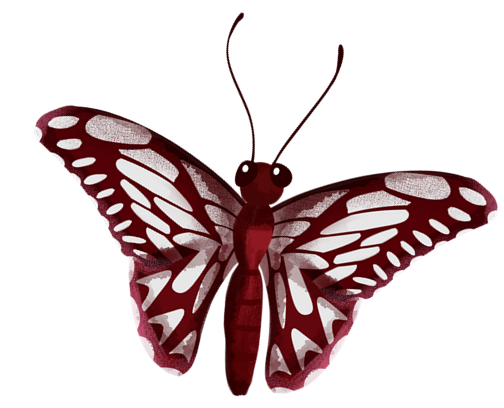
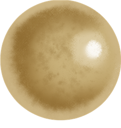
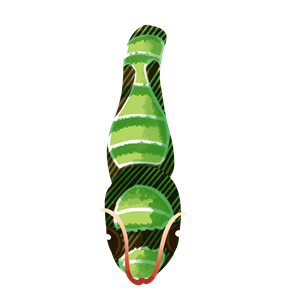

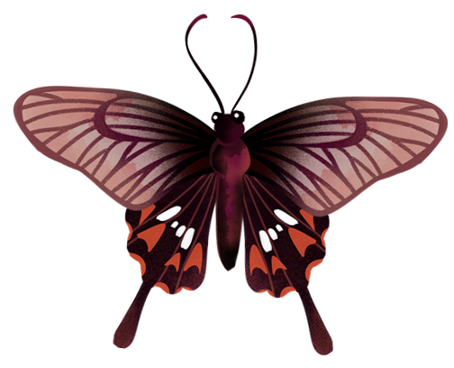
CLASSIFICATION — 型態分類
01 — HESPERIIDAE
另有 2 種偶產種、迷蝶
02 — PAPILIONIDAE
世界已知約 550～600 種
03 — PIERIDAE
世界已知超過 1000 種
04 — LYCAENIDAE
世界超過 6000 種
05 — NYMPHALIDAE
世界超過 6000 種，以往的斑蝶科、蛇目蝶科等都併入此科
四百種以上 · 約五十種只在臺灣
臺灣本島與周遭離島曾記錄過四百種以上的蝴蝶，其中約有 50 種是特有種。過去臺灣也曾將大量蝴蝶製成精美的工藝品外銷；南投埔里被喻為「世界蝴蝶之鄉」，據估計每年從埔里出口的蝴蝶超過五千萬隻。
ENEMIES & FACTS
蝴蝶的一生會遇到哪些危險？什麼時候最容易看見牠們？點開來看看。
寄生性的動物會利用蝴蝶的卵、幼蟲或蛹來繁殖下一代，是蝴蝶常見的天敵。
幼蟲蛻皮時會蠕動身體，常被風颳落到地上，再被螞蟻等昆蟲吃掉。
幼蟲剛蛻皮後會散發氣味，引來螞蟻攻擊；在養殖蝴蝶的過程中，螞蟻是最主要的天敵。蜘蛛則會辨識蝴蝶是否有毒，才決定捕食。
人類是蝴蝶最大的天敵。日治時期大量砍伐森林，之後又有經濟建設，讓臺灣的蝴蝶大量消失；人類的活動也影響著氣候與植物，間接也直接地改變了蝴蝶的生態。
早晨 8 點至 10 點是最佳賞蝶時間，但也因種類而不同，例如蛇目蝶較常在下午及傍晚活動。春夏、夏秋之交是活動巔峰，也就是端午節與重陽節前後兩個星期。
蝴蝶的呼吸系統是氣管系統，氣孔分布在身體兩側，幼蟲與成蟲都一樣。
臺灣素有「蝴蝶王國」之稱，孕育了豐富多樣的蝴蝶，其中更有只屬於這片土地的特有種。曾經，牠們被大量捕捉，製成工藝品遠銷海外；如今，人們逐漸從利用轉向保育，讓蝴蝶成為生態教育的主角。希望大家都能由觀察、認識進而愛護這美麗的昆蟲。
✿移動滑鼠，沿路讓花朵綻放
“種下花草，走近蝴蝶世界
蝴蝶除了在食物鏈上扮演著重要角色外，也提供給人類作為極佳的生態教學之助材，因蝴蝶的生態，正反應出人類的生態。
05 — HANGING PUPA
拖曳蛹再放開，它會彈回原位；點一下，認識牠會變成哪種蝴蝶。
HEMOLYMPH
蝴蝶羽化時，必須依靠狹窄蛹口的強烈擠壓，才能將體內的「血淋巴（Hemolymph）」一口氣強推至翅脈中充盈展翅。若外力輕易剪開蛹殼，缺少了這道「液壓衝擊」，蝴蝶雙翅將永久皺縮、喪失飛行能力。
6 / 6
每一次好奇的點擊，都讓一隻蝴蝶提早離開了蛹。真正的羽化需要時間，也需要蛹殼的擠壓。下次遇見懸掛的蛹，請靜靜地看著牠就好。
待開發